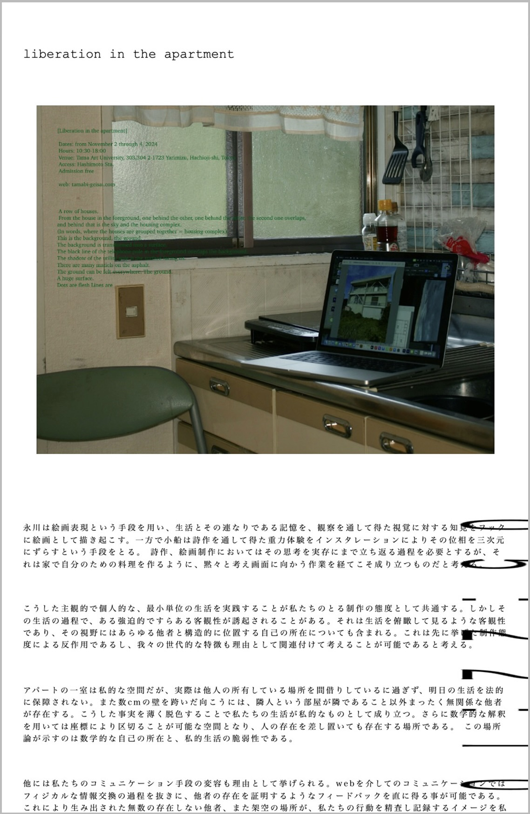

[ liberation in the apartment ] website

Medium Website
year September2025
software photoshop / Visual Studio Code
本サイトは、展示 「liberation in the apartment」 において展示したWeb作品です。
アパートという建築に見られる無個性な構造や、
同一の要素が繰り返される連続性を、Web上で表現することを目的としています。
そのため、どれだけスクロールしてもページに終わりはなく、
アパートのように永続的に続いていく構造となっています。
[ concept. ]
私たちのコミュニケーション手段の変容も、その背景として挙げられます。
Webを介したコミュニケーションでは、フィジカルな情報交換の過程を経ることなく、
他者の存在を証明するようなフィードバックを即時に得ることが可能です。
その結果、実在しない無数の他者や架空の場所が生成され、
それらが私たちの行動を精査し、記録しているかのようなイメージを、
私たちは無意識のうちに抱くようになっています。
こうした過程の中で解放されていく自我の状態を含んだ作品を、
一人につき一つの部屋としてまとめました。
個人が設計する展示室という形式は、もともと
作品の主体性や、それを鑑賞する主体が揺らぐ空間性を内在しています。
それらを階層状に配置することで、展示室同士のあいだに
フィジカル／メタフィジカルな相互作用を生み出すことを試みました。
さらに、鑑賞者がその構造に介入することで生まれる
新たなコミュニケーションを通して、
私たちの生活を公私という枠組みから解放することを目指しています。
この試行を、グループ展
『liberation in the apartment』 として提示・記録しました。
（@kobune）